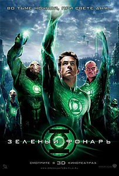

Миллиарды лет назад существа под названием Стражи Вселенной использовали зелёную сущность силы воли для создания межгалактических защитников закона под названием Корпус Зелёных Фонарей. Они разделили вселенную на 3600 секторов, по одному Зелёному Фонарю на сектор. Один из них, Абин Сур из сектора 2814, победил злобного Параллакса и посадил его в затерянном секторе на пустынной планете Рют. В настоящее время, Параллакс сбегает после того, как усиливается столкновением с выжившими в катастрофе на планете, питаясь их страхом, чтобы получить силу, после чего преследует и почти убивает Абин Сура, который бежит и терпит крушение на Земле, где он приказывает своему кольцу найти достойного преемника.
Хэл Джордан, лётчик-испытатель, работающий на "Ferris Aircraft", его находит кольцо и переносит на место крушения, где умирающий Абин Сур назначает его Зелёным Фонарём, говоря ему взять фонарь и приложив кольцо сказать клятву. Джордан произносит клятву и летит на родную планету Корпуса, Оа, где он встречается и тренируется с ветеранами Корпуса Томар-Ре, Киловогом и лидером корпуса Синестро, который считает его непригодным и робким. Джордан уходит и возвращается на Землю, оставив силовое кольцо и фонарь.
Учёный Гектор Хаммонд вызван его отцом, сенатором Робертом Хаммондом, в тайное правительственное учреждение, чтобы выполнить вскрытие тела Абин Сура под бдительным взором Аманды Уоллер. Часть Параллакса внутри трупа входит в Хаммонда, давая ему телепатические и телекинетические способности ценой его здравомыслия. Обнаружив, что он был выбран для секретной работы только из-за влияния отца, Хаммонд пытается убить отца, телекинетически ломая его вертолёт на вечеринке. Джордан спасает сенатора и гостей вечеринки, в том числе свою любовь детства Кэрол Феррис. Вернувшись на объект, Хаммонд использует телекинез, чтобы убить своего отца, сжигая его заживо. Хаммонд также поднимает Уоллер высоко над полом. Когда она падает, Джордан прибывает и спасает раненую Уоллер, создавая бассейн воды, которая смывает её от дальнейшей опасности. Во время встречи Джордан узнаёт о приходе Параллакса на Землю.
На Оа, Стражи говорят Синестро, что Параллакс был одним из них, пока он не захотел контролировать жёлтую сущность страха. Синестро просит Стражей сделать кольцо той же жёлтой власти, готовясь уступить уничтожение Земли Параллаксу для того, чтобы защитить Оа. Джордан появляется и пытается убедить Стражей, что страх превратит пользователей в зло, если его власть будет использована, но они отвергают его мольбы, и он возвращается на Землю, чтобы попытаться победить Параллакса самостоятельно.
Джордан спасает Феррис от Хаммонда после небольшой разборки. Параллакс прибывает, потребляет всю жизненную силу Хаммонда, а затем сеет хаос в городе. После ожесточённой битвы, Джордан выманивает Параллакса от Земли и убивает его, толкнув на Солнце. Он теряет сознание после битвы и падает на Солнце, но его спасают Синестро, Киловог и Томар-Ре.
Весь Корпус Зелёных Фонарей поздравляет Джордана. Синестро говорит Джордану, что теперь он несёт ответственность за защиту своего сектора в качестве Зелёного Фонаря.
В сцене после титров, Синестро берёт жёлтое кольцо и надевает его на палец, в результате чего его зелёный костюм и глаза становятся жёлтыми(намек на продолжение).
